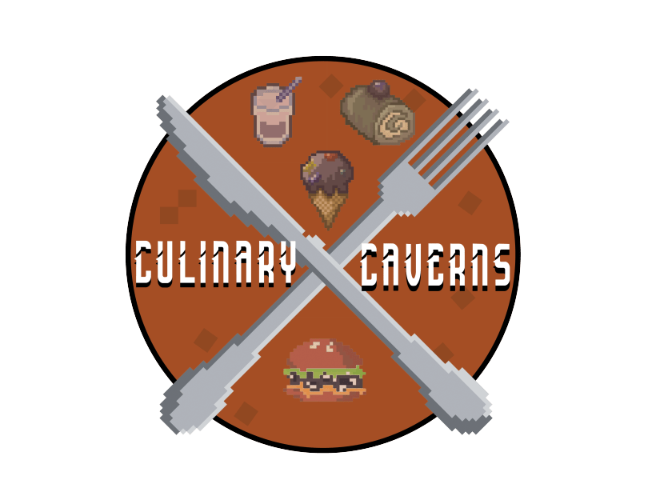

Projects
OpenCourt App
- Collaborated with a team to develop a cross-platform mobile app using React Native, Expo, and JavaScript, backed by Firebase Authentication and Firestore to enable users to efficiently organize pickup basketball games.
- Utilized HTML elements and CSS styling to create an engaging and interactive user interface.
- Implemented React Native Maps functionality to mark user location and Villanova’s on-campus basketball courts, enabling users to view nearby courts with their associated names and descriptions.
- Implemented court check-in pages to enable real-time court check-ins and display active users.
- Built comprehensive user profiles supporting photos, bios, and a badge/achievement system.
- Developed social functionality including friend lists, friend requests, DMs, group chats, court-specific chatrooms, reactions, threaded replies, and Tenor GIF API support for cohesive communication.

Culinary Caverns
- Collaborated with a team of interns to develop a multi-level 2D mining game utilizing Unity Game Engine and C# scripting.
- Programmed various game features including player movement and animation, terrain seed generation, abilities for the player to break and collect blocks, and a dynamic inventory UI system to store and show collected items.
- Implemented background music, sound effects, and level completion cues to enhance the user experience.
- Contributed to game and level design by coordinating and facilitating collaboration between team members through the use of GitHub and Trello, and organizing Discord meetings.
- Created for submission to Games for Love's Cause Jam to be featured in a charity bundle sold to raise funds to support children in hospitals.
Multi-level 2D Platformer Game
- Developed a dynamic and engaging multi-level 2D platformer game using Unity Game Engine and C# scripting.
- Implemented player movement mechanics and animations, incorporating player death logic and responsive level restart mechanics upon collision with traps.
- Designed challenging levels and integrated 2D enemy AI to enhance gameplay excitement.
- Integrated a real-time item collection system with a visible counter, background music, and sound effects for jumping, item collection, player demise, and level completion cues.
M2M File Transfer System
- Developed a simplified FTP-style client-server system using Python sockets to simulate machine-to-machine (M2M) communication in a controlled network environment.
- Engineered TCP-based socket communication to enable reliable file uploads, downloads, and session termination between autonomous client and server components.
- Designed and implemented core M2M principles including connection establishment, command parsing, and file integrity verification, mimicking real-world IoT device interactions.
- Conducted structured simulations to validate system reliability and ensure consistent performance.
Encryption Algorithm Simulation
- Developed two interactive Python programs to simulate symmetric (AES) and asymmetric (RSA) encryption using the cryptography library.
- Implemented AES encryption with Fernet, including key generation, message encryption/decryption, and a user-friendly console interface.
- Built RSA encryption functionality with key pair generation, secure key storage using PEM files, and message encryption/decryption using OAEP padding and SHA-256 hashing.
- Enabled file-based key and message management to simulate real-world secure communication workflows.
NBA Statistics Tracker Website
- Developed an NBA Statistics Tracker website in collaboration with a team using React.
- Utilized the capabilities of React.js, HTML, and CSS to build a dynamic and responsive user interface, ensuring an efficient and engaging user experience with weekly updates to statistics.
- Integrated navigation functionality to allow the user to efficiently and effectively navigate between different statistics pages.
- Implemented a database using Firebase to establish a secure user authentication system, allowing users to sign up and store credentials.
College Football Ranking System
- Designed algorithms using Python to rank college football teams in the Big 12 conference based on game outcomes and data from the 2016-17 season.
- Implemented Colley’s and Massey’s methods to evaluate teams based on various determining factors.
- Utilized linear algebra concepts such as systems of linear equations, matrix operations, and eigenvalues to analyze data and enhance accuracy of rankings.
- Processed datasets to extract insights and draw conclusions, showcasing experience in data analysis, Python programming, and mathematical modeling.
Movie List App
- Developed a React Native mobile app to create an interactive movie information tracker.
- Utilized Expo for project setup and used a FlatList to display a list of movies on a home screen.
- Integrated navigation functionality to display pages with relative details upon selecting movie titles.
- Implemented an efficient user interface allowing the user to fetch additional movie data from an API and effectively update the information seen on screen.
Recursive Problem Solving with JUnit Testing
- Utilized JUnit to test recursive methods to solve various problems, including exponentiation, string reversal, cleaning adjacent characters, and computing Fibonacci numbers.